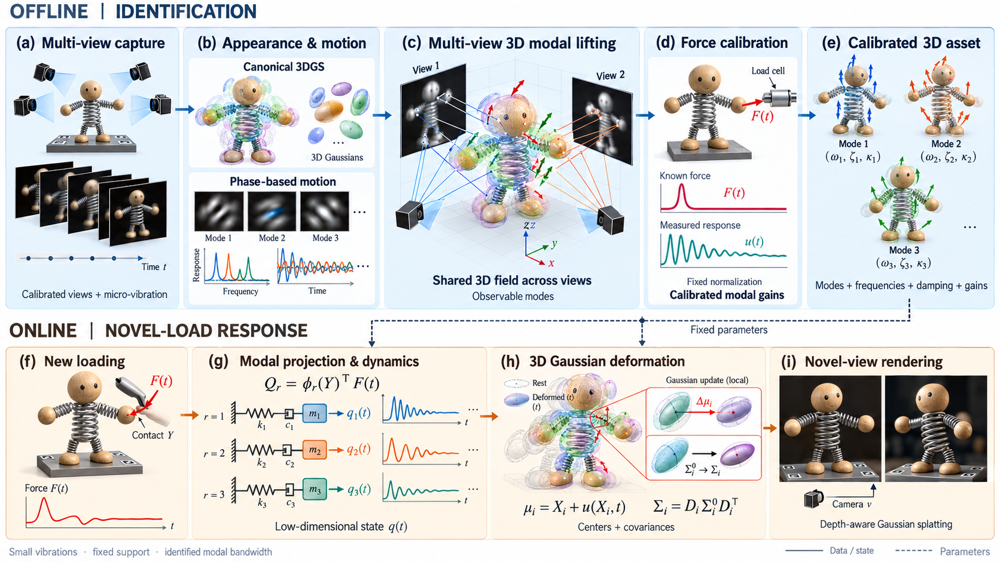
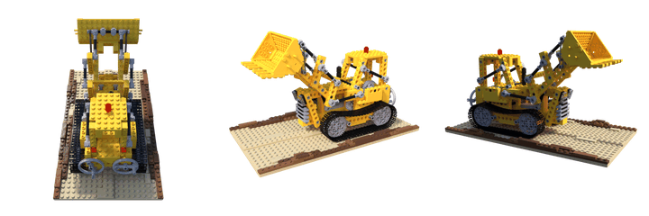
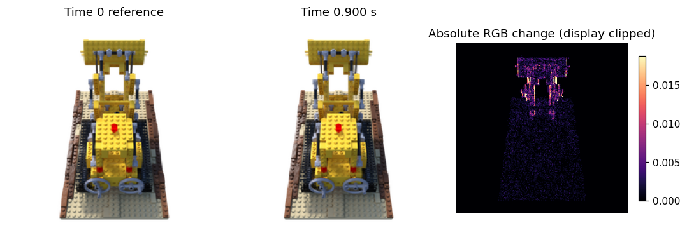
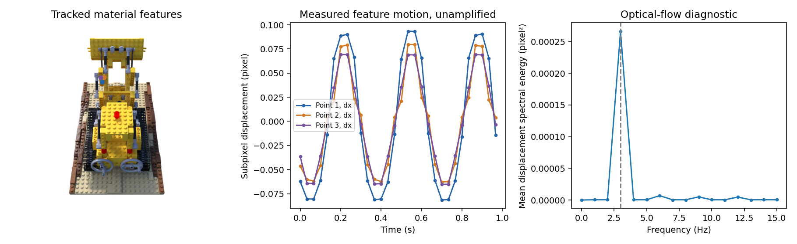
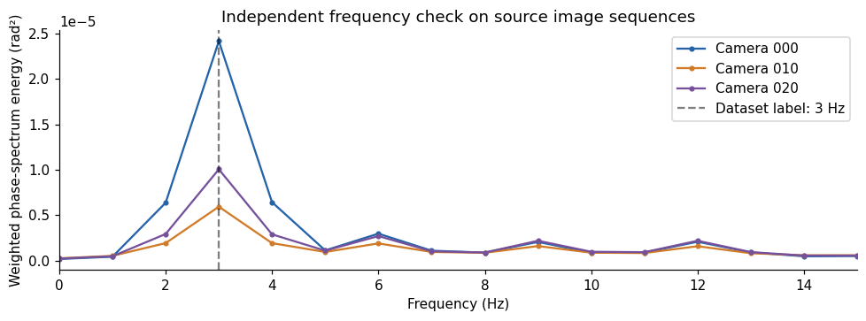
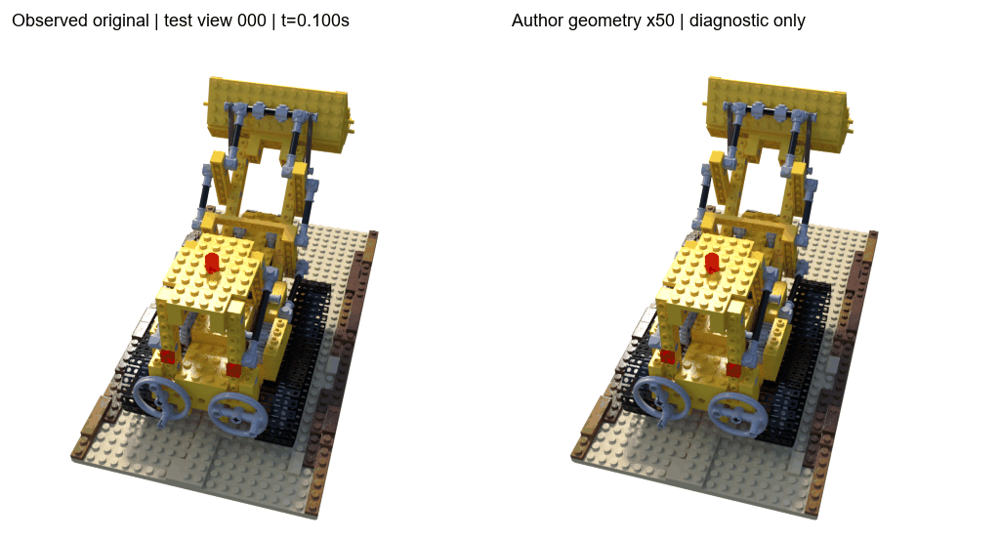

V2 · 高保真 Gaussian 外观与共享运动场
先优化静态 3DGS 外观，再冻结外观，从原始微位移拟合共享三维复数运动场。它是 V2 的外观升级，与粗初始化属于同一研究阶段。
支持自由转视角、拖拽、轻敲和阻尼 / 频率调节。交互强度与阻尼不能解释为已标定的真实受力响应。
将力学模态融入 3D Gaussian Splatting，构建可交互的三维动力学表示。
本页面仅用于展示实验过程中的思路与想法，结果尚未完善。
进入交互实验 查看原始数据
这里的 Lego 不是单张静态图片，而是 3D Motion Magnification（ICCV 2023）公开的 lego_3Hz 合成动态序列。我们使用同一相机跨时间的图像进行诊断；同一时刻切换相机，不能当作物体振动。





选择方法后点击“加载交互”。较大的模型首次加载需要一些时间。
先优化静态 3DGS 外观，再冻结外观，从原始微位移拟合共享三维复数运动场。它是 V2 的外观升级，与粗初始化属于同一研究阶段。
支持自由转视角、拖拽、轻敲和阻尼 / 频率调节。交互强度与阻尼不能解释为已标定的真实受力响应。
点击“加载交互”开始体验
后续将补充更多实验数据和方法，完善后开源。